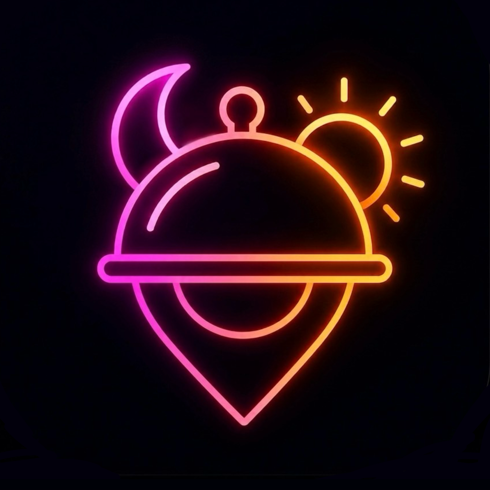
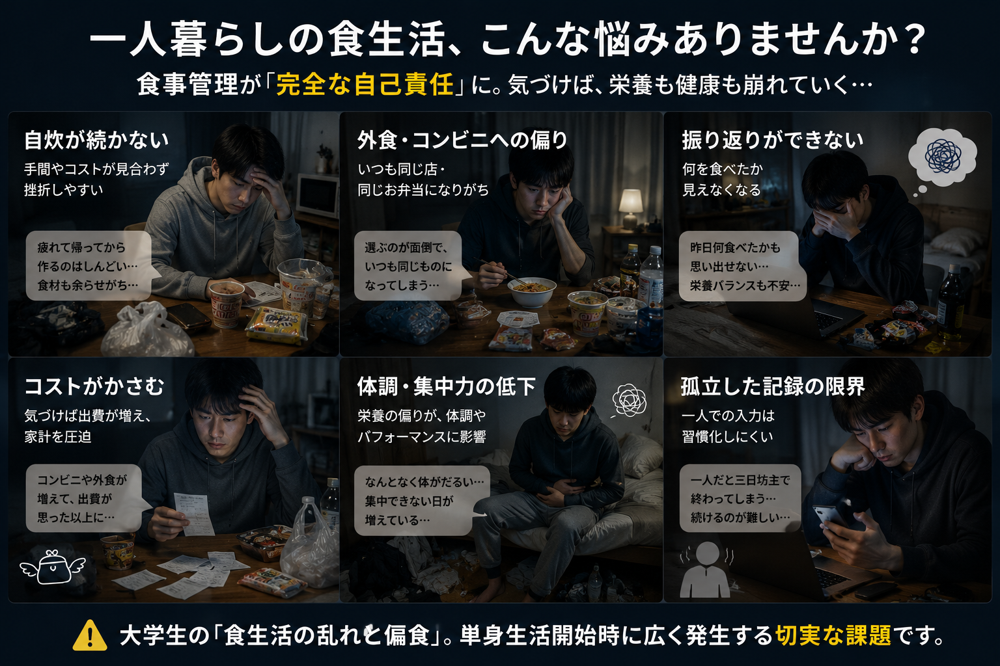

ユーザー体験フロー
1. 記録・投稿
写真でサクッと投稿
2. 共有・反応
友達フィードで交流
3. 選択肢の拡大
地図で友達のお店を発見
4. 振り返り
記録タブで偏食に気づく

続く食の記録で、偏らない食生活を。
一人暮らし大学生の食生活を、友達との共有と地図で支える食事SNS
Flutter / Supabase / PostgreSQL / Google Maps
基礎工学 PBL（情報工学 A）— 1班 · 中間発表
食事管理が「完全な自己責任」へ — 一人暮らしで食生活が崩れやすい

切実性：大学生の「食生活の乱れと偏食」／普遍性：単身生活開始時に広く発生
| アプローチ | 代表例 | 強み | Who eatsが解決する限界 |
|---|---|---|---|
| カロリー・献立管理 | あすけん 等 | 詳細な栄養素の管理と指導 | 入力負担が極めて高く、続けるハードルが高い |
| グルメ・地図 | Google Maps 食べログ |
圧倒的な店舗情報とレビュー数 | 不特定多数の評価であり、自分に近い人の体験が見えない |
| 一般 SNS | Instagram X (Twitter) |
写真一枚で気軽に投稿できる | 情報が流れてしまい、食生活として振り返りにくい |
| Who eats | 本アプリ | 食生活・偏食を主題に、友達の記録 + 地図 | 「知らない星5より、友達の一枚」— 続く記録で偏りに気づく |
経緯： 自炊管理アプリ → 続かない → 写真投稿＋友達共有の SNS 型（偏食を防ぐ・続く記録が目的）
自炊・外食を同じ流れで投稿し、共有することで食の記録を続けやすくする
自炊も外食も、写真と短いコメントだけで記録。カロリー入力の重さを排除し、SNS感覚で「続く記録」を実現します。
友達の食事から刺激を受け、継続の動機づけに。いいねやコメントの反応が、一人作業の孤独感を解消します。
外食投稿は地図上のピンに。友達が実際に行った信頼できる店を見つけることで、コンビニへの偏りを防ぎます。
写真でサクッと投稿
友達フィードで交流
地図で友達のお店を発見
記録タブで偏食に気づく
フロントエンドだけで完結させず、BaaS と外部 API を接続しています。
1回の投稿を、多角的に再利用するデータ設計
信頼性は「友達ベースのサービス設計」と「DBレベルの技術設計」の2層で担保します。
将来の AI 分析や機能拡張に耐えうる分離設計を行っています。
users, posts, places 等に正規化し、将来の「AIによる食事傾向分析」の基盤とする。今後のスケジュール
Phase 1 完成
UI/UX 改善
App Store リリース
フィードバック
A/B テスト → 新機能
AI 偏り分析
栄養士連携など
まず App Store で届け、フィードバックと A/B テスト で育てる
「続く食の記録で、偏らない食生活を支える」